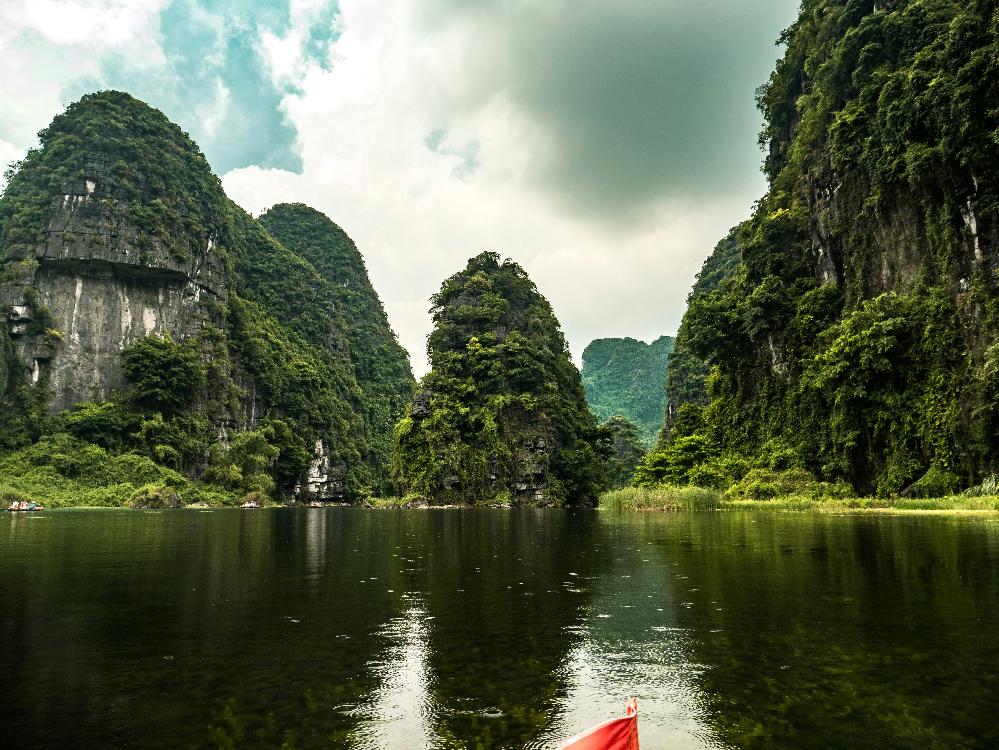

Natuur
Groene bergen en prachtige baaien
Ontdek de natuur, cultuur en mooiste bestemmingen.
Groene bergen en prachtige baaien
Ontdek Hanoi en Ho Chi Minhstad
Bijzondere tradities en geschiedenis
Proef de Vietnamese keuken
Plan jouw avontuur door Vietnam
Vietnam is een bijzondere reisbestemming met indrukwekkende natuur, historische steden en een rijke cultuur.
Van de groene bergen in het noorden tot de levendige steden in het zuiden: er is voor iedere reiziger iets te ontdekken.
Ontdek de reisroutes
Hanoi is de hoofdstad van Vietnam. De stad staat bekend om haar historische binnenstad, drukke straten en traditionele Vietnamese cultuur.
Bekijk de fotobron
Hoi An is een historische stad die bekendstaat om haar kleurrijke lampionnen en traditionele gebouwen. Vooral in de avond heeft de stad een bijzondere uitstraling.
Bekijk de fotobron
Sapa ligt in het bergachtige noorden van Vietnam. De regio staat bekend om haar rijstterrassen, groene valleien en indrukwekkende berglandschappen.
Bekijk de fotobron
Een goede voorbereiding maakt je reis door Vietnam nog leuker. Met deze vijf tips ga je goed voorbereid op pad.
Vietnam heeft voor iedere reiziger iets bijzonders. Ontdek de natuur, cultuur en levendige steden.
Ontdek groene rijstterrassen, hoge bergen en prachtige landschappen in Vietnam.
Bekijk reisroutes
Leer meer over de geschiedenis, tradities en historische steden van Vietnam.
Bekijk de galerij
Verken de drukke straten, lokale markten en het stadsleven van Vietnam.
Ontdek de foto's